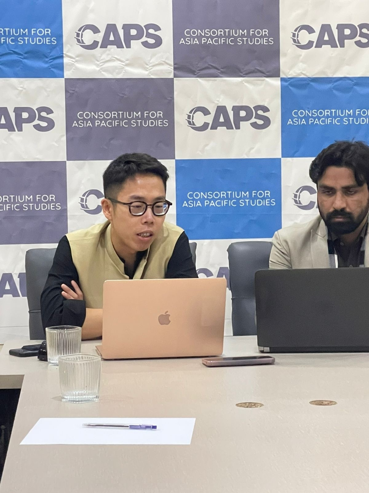
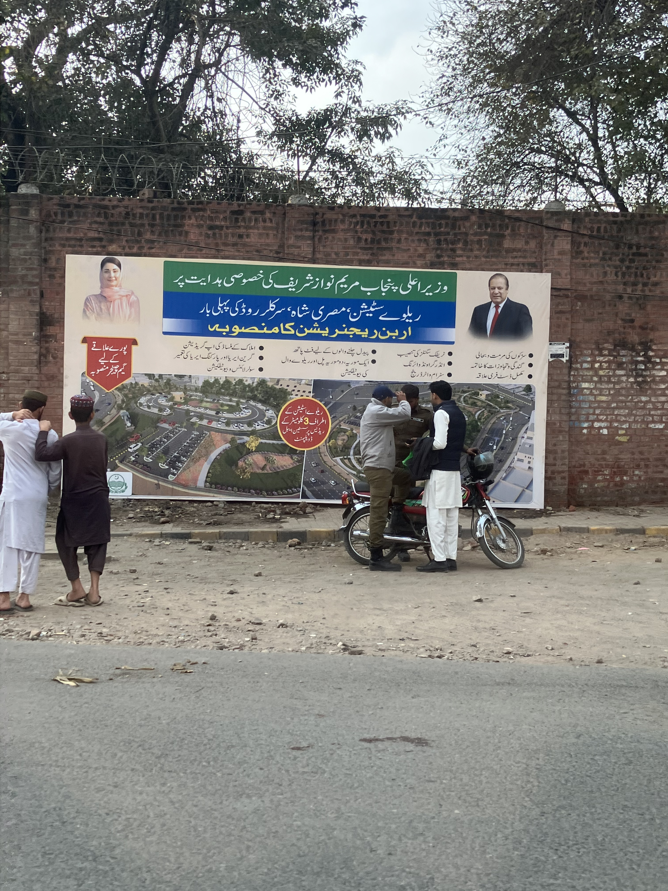

Michael Huang میکائیل ہوانگ 黃樹彥
پھر ملیں گے اگر خدا لایا - میر تقی میر

Fieldwork: December 2025 – Islamabad and Lahore
Overview
In December 2025, I conducted fieldwork in Islamabad and Lahore as part of my broader research agenda on foreign aid, political accountability, and public trust in donor countries. During this fieldwork, I carried out semi-structured interviews with aid bureaucrats, aid workers, journalists, and other professionals involved in the foreign aid sector in Pakistan.
These interviews examined how foreign aid is understood, narrated, implemented, and contested by actors who work closely with aid institutions, development projects, and public communication. I was particularly interested in how bureaucrats, practitioners, and journalists interpret donor motives, evaluate project effectiveness, and understand the relationship between aid delivery, media coverage, and domestic political narratives.
Gallery

Giving a talk on foreign aid at the Consortium for Asian Pacific Studies – Islamabad
Board of Investment office - Islamabad

People discussing in front of a railway project plan poster - Lahore
For more information about this fieldwork or related projects, please contact me at shuyanh2@illinois.edu.